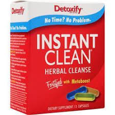

Detox / Cleanses
DETOXIFY INSTANT CLEAN
You can enjoy a healthier, cleaner body with Detoxify Instant Clean. Instant Clean is the herbal cleansing detox capsule product used by people just like you. They cleansed their systems of toxins and impurities with Instant Clean, and so can you.
Detoxify Instant Clean is the way to help lower the impurities your body absorbs every day.
Follow these simple steps and you will notice Instant Clean’s immediate impact on your body’s natural cleansing process
PRODUCT INFO
- Pick your day for using your INSTANT CLEAN for intensive cleansing.
- Begin your cleansing program with INSTANT CLEAN.
- Take the Cleansing Blend capsule (clear) with 20oz of water. Wait 15 minutes.
- Take the Nutrient capsule (yellow) with 20oz of water. Wait 15 minutes.
- Take the Metaboost capsule (blue) with 20 oz of water.
- Urinate frequently. Urinating 2-3 times indicates that you are experiencing optimal cleansing with INSTANT CLEAN.
- You may drink 16oz of water every 2 hours after using INSTANT CLEAN to extend your cleansing benefits throughout the day.
ADDITIONAL INFORMATION:
- INSTANT CLEAN is intended for periodic intensive cleansing that is a part of an ongoing cleansing routine.
- For best results, use Detoxify’s® PreCleansing products for 2 days prior to using INSTANT CLEAN.
- For optimal cleansing and health, take Detoxify Constant Cleanse every day with six 16oz glasses of water.
- Eat light meals, including fruits, vegetables, and fiber during your cleansing program.
PREGNANT OR BREASTFEEDING WOMEN SHOULD CONSULT THEIR PHYSICIAN BEFORE USING THIS PRODUCT. INSTANT CLEAN is not intended for children.
DOES INSTANT CLEAN WORK?
With its powerful ingredients, Detoxify Instant Clean is the most powerful detox product on the market today. It has been effective for people who are committed to cleansing. Simply follow Instant Clean’s guidelines for intensive cleansing and the Instant Clean directions, and you will experience optimal cleansing.
DETOXIFY INSTANT CLEAN INGREDIENTS
Each Instant Clean contains our proprietary herbal blend. Instant Clean also includes:
- Vitamin A
- Vitamin D
- Thiamin
- Riboflavin
- Niacinamide
- Pyridoxine HCl
- Folic Acid
- Vitamin B12
- Biotin
- Pantothenic Acid
- Calcium
- Magnesium
- Zinc
- Selenium
- Manganese
- Chromium
- Creatine Monohydrate
Instant Clean’s exclusive herbal formula is:
- Nettle – Acts as a diuretic in Instant Clean to help release toxins from the body.
- Ginseng – Traditionally used to boost the immune, cardiovascular and metabolic systems.
- Milk Thistle – Included in Instant Clean to restore healthy liver function and minimize toxin damage.
- Uva Ursi – In Instant Clean to promote kidney and urinary health.
- Metaboost – Instant Clean contains guarana and taurine which have been clinically proven to boost the metabolism and enhance rapid intensive cleansing.
MORE INFORMATION ON YOUR INSTANT CLEAN
Detoxify Brand herbal cleansing supplements have been specifically formulated with a proprietary blend of ingredients proven to reduce toxins and impurities in the body when used in conjunction with a healthy diet and exercise.
The herbs, fiber, vitamins and minerals in Instant Clean support the 4 Factors of Full System Cleansing™:
- Diuretic and cleansing herbs support healthy liver, kidney and urinary system function.
- Fruit fiber supports digestive system function and health.
- Heart health herbs support circulatory system function and blood cleansing.
- Vitamins and minerals replenish nutrients lost during intensive cleansing.
Plus Metaboost: These ingredients have been shown to provide the metabolic boost necessary to achieve rapid intensive cleansing.
These statements have not been evaluated by the Food and Drug Administration. This product is not intended to diagnose, treat, cure or prevent any disease. Except as stated here, Detoxify disclaims any and all representations, expressed or implied, concerning the manufacturing, use, or performance of its products made by any third party. Detoxify notifies all distributors, retailers, and consumers of its products that all disclaimed representations are unauthorized, wrongful and false, and in certain jurisdictions may be unlawful.
RETURN & REFUND POLICY
All Sales are FINAL !
SHIPPING INFO
I'm a shipping policy. I'm a great place to add more information about your shipping methods, packaging and cost. Providing straightforward information about your shipping policy is a great way to build trust and reassure your customers that they can buy from you with confidence.